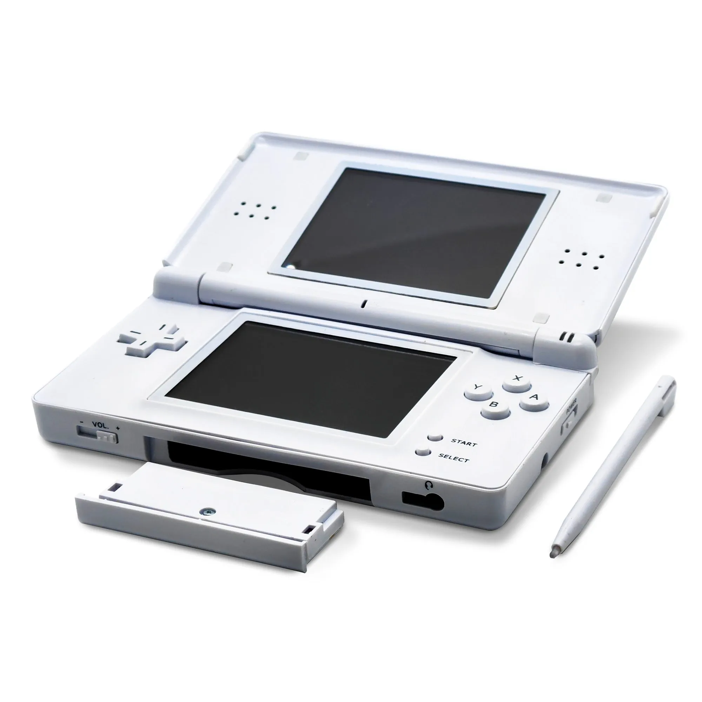
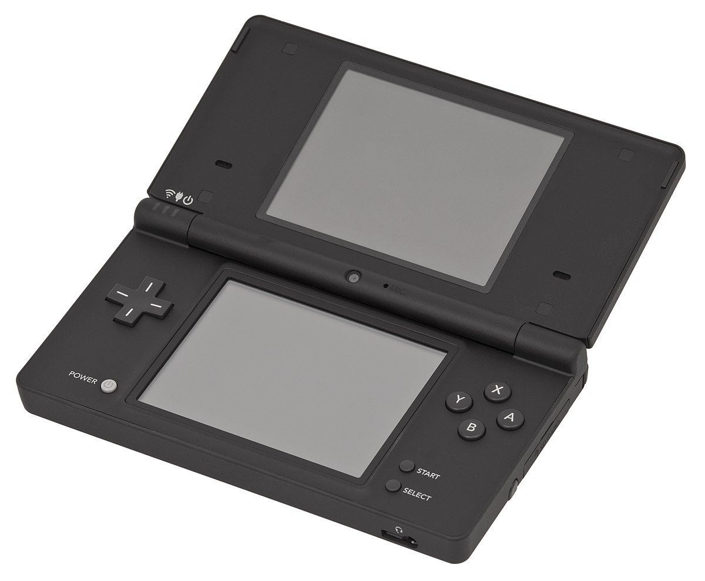
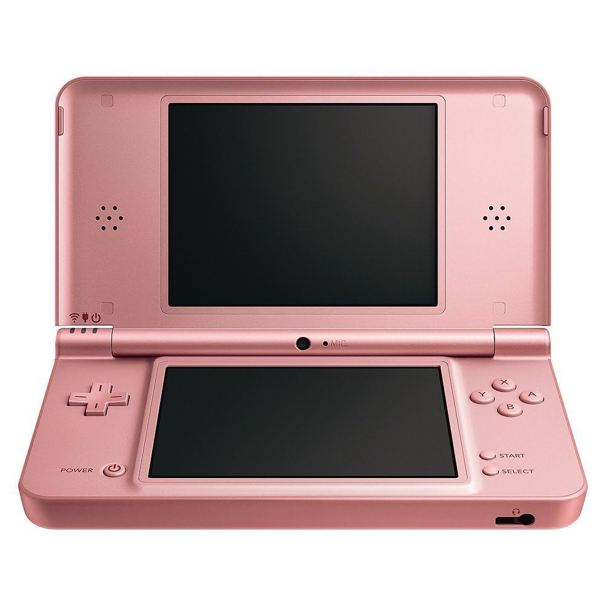
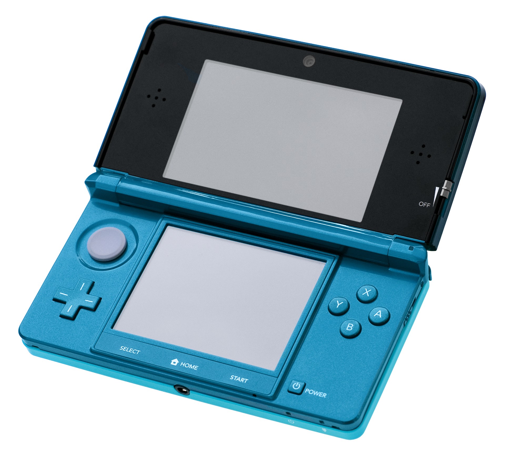
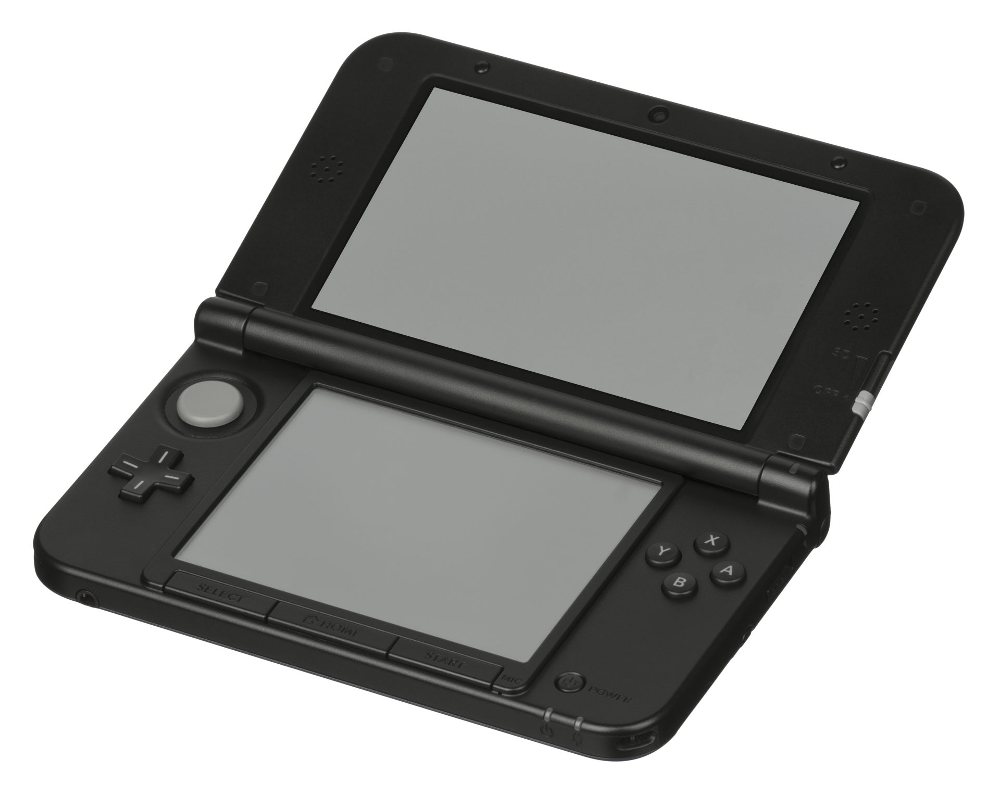
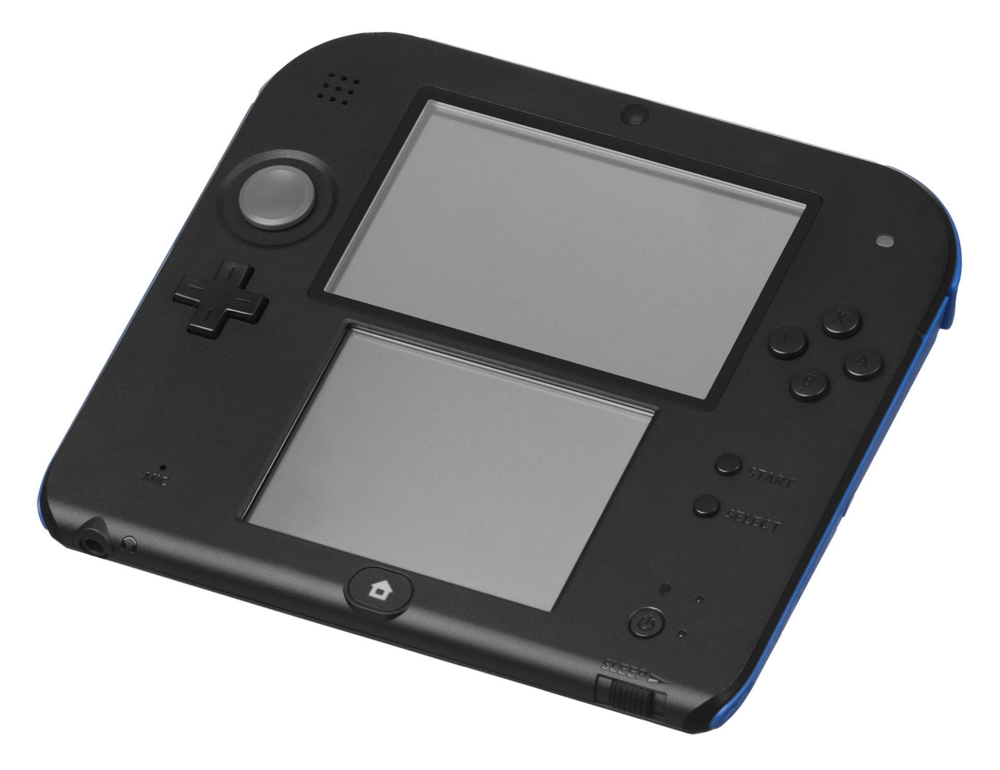
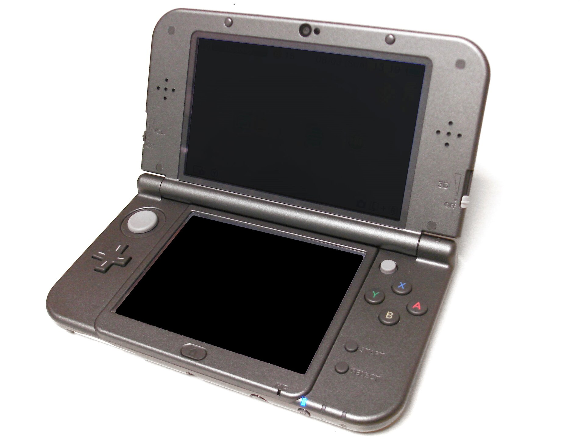
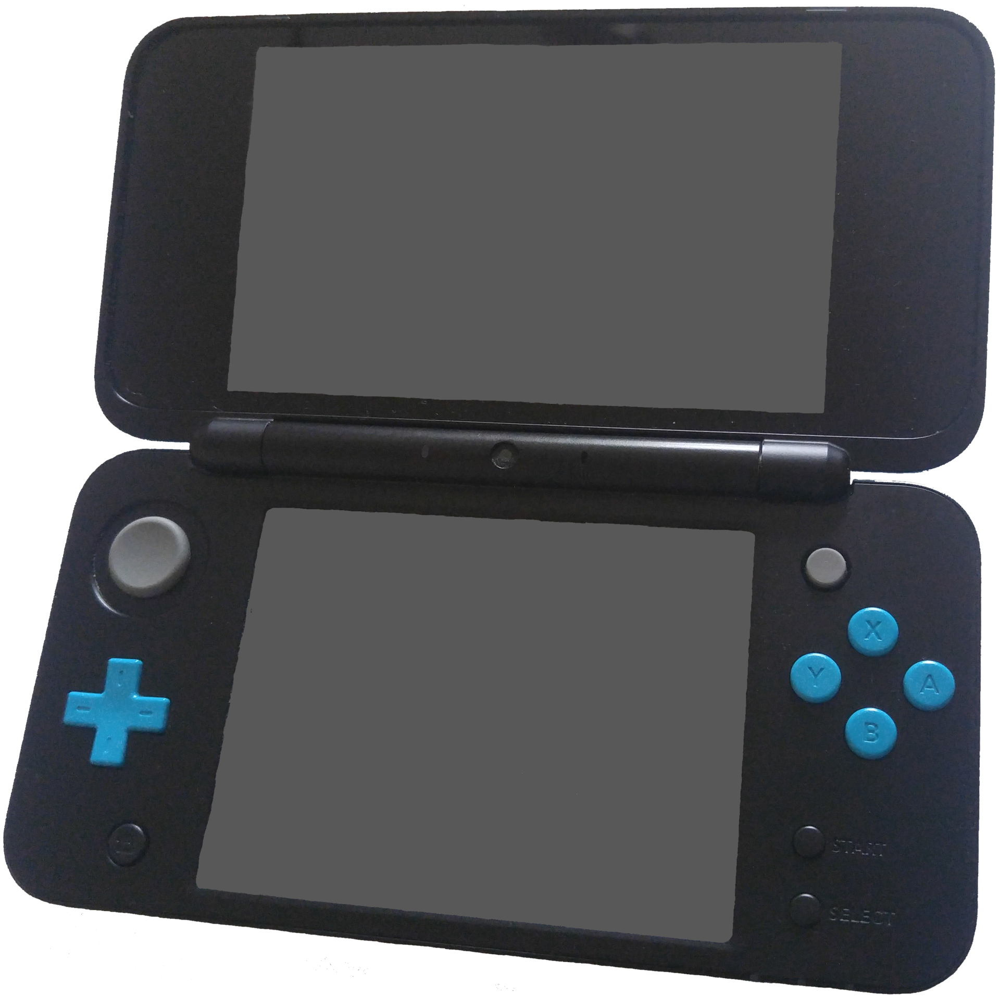

2004: The original Nintendo DS — the console that started the dual-screen handheld family.
2006: DS Lite — a slimmer, brighter version of the original DS.
2008: DSi — added cameras, storage options, and online capabilities.
2009: DSi XL — a larger version of the DSi with bigger screens and improved comfort.
2011: 3DS — introduced 3D graphics and backward compatibility with DS games.
2012: 3DS XL — a larger version of the 3DS with bigger screens and enhanced comfort.
2013: 2DS — an affordable, flat design version of the 3DS without 3D functionality.
2014: New 3DS / New 3DS XL — improved processing power, additional controls, and enhanced 3D.
2017: New 2DS XL — a more affordable version of the New 3DS XL, retaining the clamshell design without 3D.